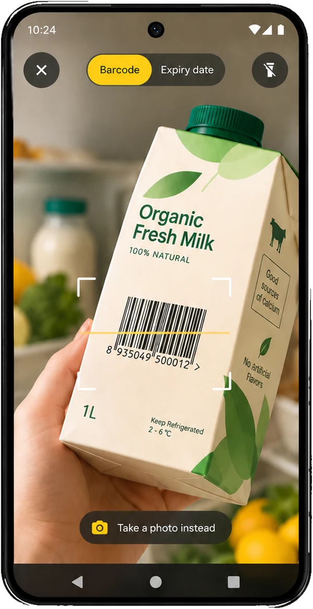
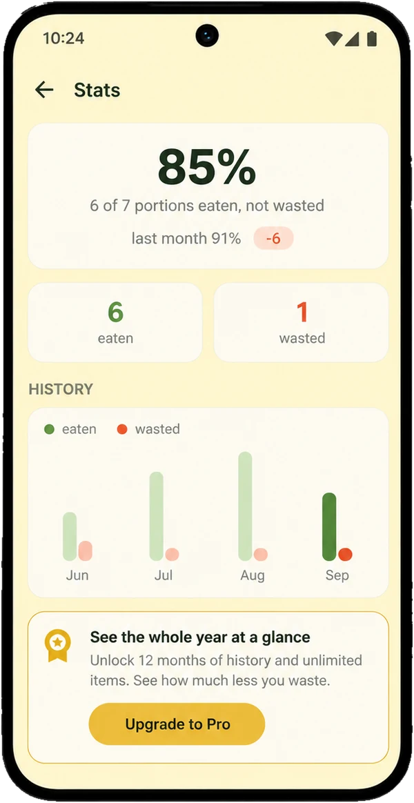
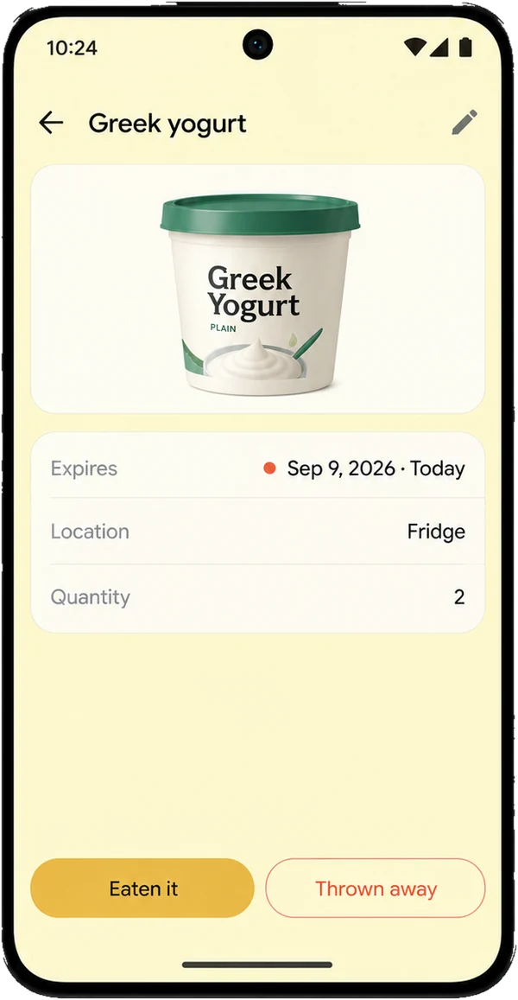

Scan it.
Track it.
Point the camera at a barcode to get the product name, or at the printed date to read the expiry. Basil reads both on your phone in a couple of seconds and fills in the form. You check it and save.
- Barcode and expiry date, one scanner
- Reads HSD, EXP and BEST BY
- Or snap a photo and type it in

Use it before
it goes off.
One reminder a day, at the time you pick, three, two and one day before something expires. When an item has to go today, it buzzes. A widget on your home screen keeps the next few in view.
- Choose the days and the time
- One tidy notification, not a pile
- Home-screen widget, light or dark
2 items need attention now
- Greek yogurt expires today
- Fresh salmon expires tomorrow
- Baby spinach expires in 2 days
Waste less,
month by month.
Every month Basil counts what you ate and what you threw away, portion by portion. Not to make you feel bad. Just so you can watch the number go down.

One tap
when it's gone.
Mark something eaten or thrown away from its page or straight from the list. Ate one of four yogurts? Basil keeps the other three. Tapped the wrong one? Undo.

Private
by design.
No account, no servers, no analytics. Everything you add stays on your phone. The only thing that ever leaves is a barcode number, sent to Open Food Facts to look up a product name.